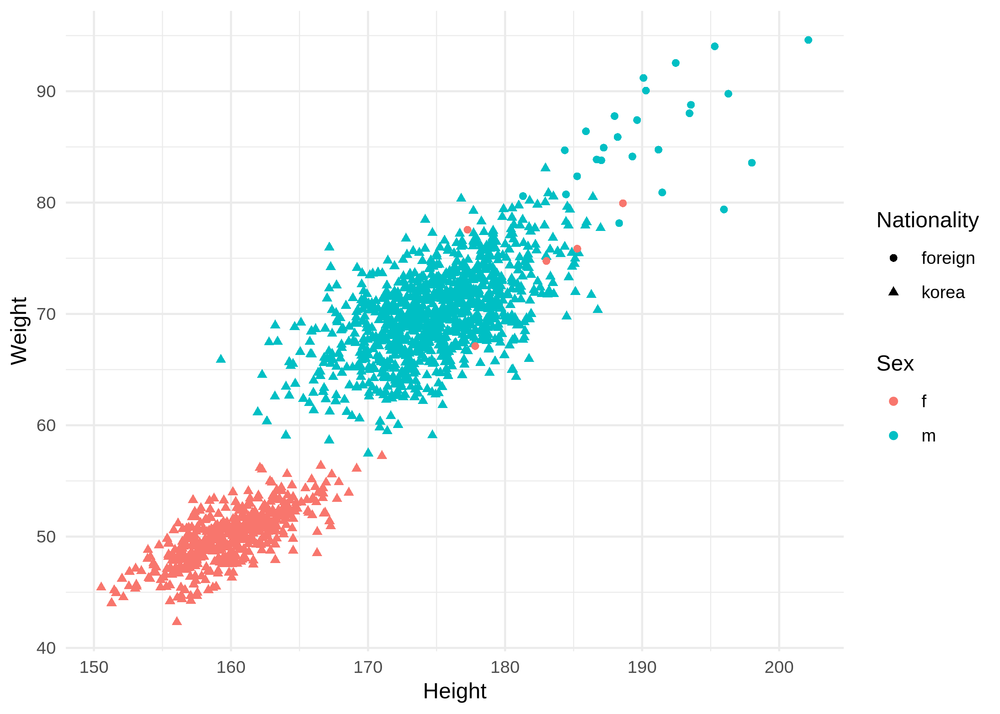
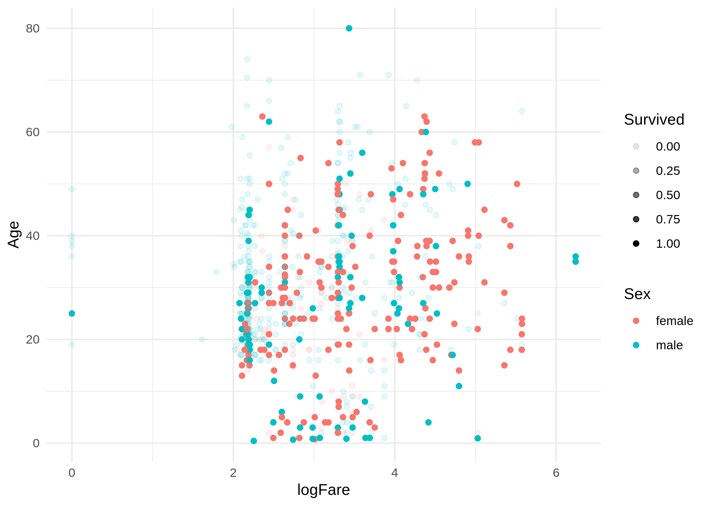

# {{<video https://youtu.be/playlist?list=PLQqh36zP38-yMQ_DWi4dNXO-TcvRWsEpe&si=hOepRoFD05vAS_pT>}}13wk-2: [시각화] – 훌륭한 시각화, 타이타닉
library(tidyverse)
options(repr.plot.res = 350)
options(repr.plot.width = 7)
options(repr.plot.height = 5)1. 훌륭한 시각화
A. 애드워드 터프티
- 데이터 시각화계의 거장
- 터프티의 이론중 백미: 엄격한 미니멀리즘
- 최소한의 잉크로 많은 정보를 전달할 수 있다면 그것이 바로 좋은 그래프이다.
- 작은 지면 내에서 잉크를 최대한 적게 써서 짧은 시간 안에 많은 영감을 주어야 한다.
- 데이터-잉크비: 데이터를 표현하는데 들아가는 잉크의 양 / 그래픽을 인쇄하는데 들어가는 잉크의 총량
- 차트정크 (나이젤홈즈의 그래프)

“Lurking behind chartjunk is contempt both for information and for the audience. Chartjunk promoters imagine that numbers and details are boring, dull, and tedious, requiring ornament to enliven. Cosmetic decoration, which frequently distorts the data, will never salvage an underlying lack of content. If the numbers are boring, then you’ve got the wrong numbers (…) Worse is contempt for our audience, designing as if readers were obtuse and uncaring. In fact, consumers of graphics are often more intelligent about the information at hand than those who fabricate the data decoration (…) The operating moral premise of information design should be that our readers are alert and caring; they may be busy, eager to get on with it, but they are not stupid.”
- 차트정크 = 대중을 멸시 + 데이터에 대한 모독
- 차트정크 옹호가는 숫자와 데이터가 지루하여 활기가 필요하다고 생각하는 모양이다..
- 별로인 그래프 (왼쪽) / 우수한 그래프 오른쪽

- 별로인 그래프 (왼쪽) / 우수한 그래프 오른쪽

- 별로인 그래프 (왼쪽) / 우수한 그래프 오른쪽

- 제 생각: 글쎄…
B. 찰스미나드의 도표
- 인류역사상 가장 훌륭한 시각화

- 터프티의 평
- 지금까지 그려진 최고의 통계 그래픽일지도 모른다.
- 여기에서는 군대의 크기, 2차원 평면상의 위치, 군대의 이동방향, 모스코바에서 퇴각하는 동안의 여러날짜, 온도 \(\to\) 6차원의 변수
- 백만번에 한번 이런 그림을 그릴수는 있겠으나.. 이러한 그림을 그리는 원칙은 없다 \(\to\) 미니멀리즘
- 왜 우수한 그래프일까?
- 자료를 파악하는 기법은 최근까지도 산점도, 막대그래프, 라인플랏에 의존
- 이러한 플랏의 단점은 고차원의 자료를 분석하기 어렵다는 것임
- 미나드는 여러그림을 그리는 방법 대신에 한 그림에서 패널을 늘리는 방법을 선택함.
C. 미나드처럼 그리는게 왜 어려운가?
- 몸무게, 키, 성별, 국적
df = read_csv("body.csv")
head(df)Rows: 1530 Columns: 4 ── Column specification ────────────────────────────────────────────────────────────────────────────────────────────────────────── Delimiter: "," chr (2): Sex, Nationality dbl (2): Weight, Height ℹ Use `spec()` to retrieve the full column specification for this data. ℹ Specify the column types or set `show_col_types = FALSE` to quiet this message.
| Weight | Height | Sex | Nationality |
|---|---|---|---|
| <dbl> | <dbl> | <chr> | <chr> |
| 72.78822 | 183.4868 | m | korea |
| 66.60643 | 173.5999 | m | korea |
| 69.80632 | 173.2379 | m | korea |
| 67.44944 | 173.2238 | m | korea |
| 70.46318 | 174.9319 | m | korea |
| 65.44524 | 177.0369 | m | korea |
- 이 자료를 시각화 한다면 보통은 아래와 같이 할 것이다.
x = df$Weight[(df$Sex == "f") & (df$Nationality=="korea")]
y = df$Height[(df$Sex == "f") & (df$Nationality=="korea")]
plot(x,y)x = df$Weight[(df$Sex == "f") & (df$Nationality=="foreign")]
y = df$Height[(df$Sex == "f") & (df$Nationality=="foreign")]
plot(x,y)x = df$Weight[(df$Sex == "m") & (df$Nationality=="korea")]
y = df$Height[(df$Sex == "m") & (df$Nationality=="korea")]
plot(x,y)x = df$Weight[(df$Sex == "m") & (df$Nationality=="foreign")]
y = df$Height[(df$Sex == "m") & (df$Nationality=="foreign")]
plot(x,y)- 아래와 같이 2x2로 할듯
par(mfrow= c(2,2))
x = df$Weight[(df$Sex == "f") & (df$Nationality=="korea")]
y = df$Height[(df$Sex == "f") & (df$Nationality=="korea")]
plot(x,y)
x = df$Weight[(df$Sex == "f") & (df$Nationality=="foreign")]
y = df$Height[(df$Sex == "f") & (df$Nationality=="foreign")]
plot(x,y)
x = df$Weight[(df$Sex == "m") & (df$Nationality=="korea")]
y = df$Height[(df$Sex == "m") & (df$Nationality=="korea")]
plot(x,y)
x = df$Weight[(df$Sex == "m") & (df$Nationality=="foreign")]
y = df$Height[(df$Sex == "m") & (df$Nationality=="foreign")]
plot(x,y)
par(mfrow= c(1,1))- 하나의 그림에 모든 정보를 표현하려면?
ggplot(df) + geom_point(
aes(x=Height, y=Weight,color=Sex,shape=Nationality)
) + theme_minimal()
2. 타이타닉
A. Data
- 데이터 load
df = read_csv('titanic.csv')
head(df)Rows: 891 Columns: 12 ── Column specification ────────────────────────────────────────────────────────────────────────────────────────────────────────── Delimiter: "," chr (5): Name, Sex, Ticket, Cabin, Embarked dbl (7): PassengerId, Survived, Pclass, Age, SibSp, Parch, Fare ℹ Use `spec()` to retrieve the full column specification for this data. ℹ Specify the column types or set `show_col_types = FALSE` to quiet this message.
| PassengerId | Survived | Pclass | Name | Sex | Age | SibSp | Parch | Ticket | Fare | Cabin | Embarked |
|---|---|---|---|---|---|---|---|---|---|---|---|
| <dbl> | <dbl> | <dbl> | <chr> | <chr> | <dbl> | <dbl> | <dbl> | <chr> | <dbl> | <chr> | <chr> |
| 1 | 0 | 3 | Braund, Mr. Owen Harris | male | 22 | 1 | 0 | A/5 21171 | 7.2500 | NA | S |
| 2 | 1 | 1 | Cumings, Mrs. John Bradley (Florence Briggs Thayer) | female | 38 | 1 | 0 | PC 17599 | 71.2833 | C85 | C |
| 3 | 1 | 3 | Heikkinen, Miss. Laina | female | 26 | 0 | 0 | STON/O2. 3101282 | 7.9250 | NA | S |
| 4 | 1 | 1 | Futrelle, Mrs. Jacques Heath (Lily May Peel) | female | 35 | 1 | 0 | 113803 | 53.1000 | C123 | S |
| 5 | 0 | 3 | Allen, Mr. William Henry | male | 35 | 0 | 0 | 373450 | 8.0500 | NA | S |
| 6 | 0 | 3 | Moran, Mr. James | male | NA | 0 | 0 | 330877 | 8.4583 | NA | Q |
B. 시각화
df$logFare = log(df$Fare + 1)ggplot(df) + geom_point(aes(x= logFare, y= Age, color= Sex, alpha= Survived)) + theme_minimal()Warning message: “Removed 177 rows containing missing values or values outside the scale range (`geom_point()`).”

C. 분해
fig = ggplot(df)
point = geom_point(aes(x= logFare, y= Age, color= Sex, alpha= Survived))
theme = theme_minimal()fig + point + themeWarning message: “Removed 177 rows containing missing values or values outside the scale range (`geom_point()`).”
